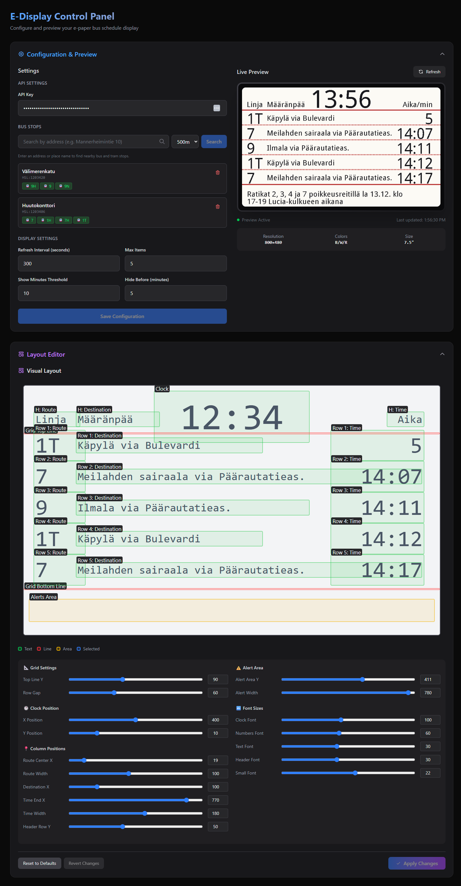

Step 1
Clone it and add your key
Register at the Digitransit developer portal,
then drop the key into .env.
git clone https://github.com/Saavuori/E-Display.git
cd E-Display
echo "HSL_API_KEY=your_key_here" > .envRaspberry Pi · Waveshare 7.5″ B/W/R · HSL open data
E-Display pulls live departures from Helsinki Regional Transport and draws them onto a 7.5-inch e-paper panel. No backlight, no app, no unlocking your phone on the way out the door — just the wall telling you whether to run.
Ratikat 2, 3, 4 ja 7 poikkeusreitillä la 13.12. klo 17–19 Lucia-kulkueen aikana
Everything is driven from one config.json — stops, filters, fonts, pixel
positions. Edit it by hand or from the browser; both write the same file.
Query any number of HSL stops through the Digitransit GraphQL API and merge them into one sorted list. Keep only the routes you actually take, and hide departures you could never reach in time.
Anything arriving inside the threshold — ten minutes by default — counts down in minutes. Everything further out shows as a departure time.
Alerts on the routes you follow are wrapped into the strip below the grid, and the rules use the panel's third colour. That is what the red ink is for.
Temperature and conditions come from the Finnish Meteorological Institute's open WFS feed, cached for 30 minutes and drawn as hand-plotted 1-bit icons that survive a monochrome panel.
When the Waveshare driver can't be imported, the renderer falls back to a mock panel and writes a PNG instead. The whole 18-test suite runs without hardware or network access.
Backend, control panel and display driver are published to GHCR and started with
one docker compose up. A scoped Watchtower keeps them current.
One loop, five stages, repeated on the refresh interval. Stage 05 is the slow one: a full e-paper refresh takes a couple of seconds and the panel flashes while it settles.
01
A GraphQL query per configured stop hits api.digitransit.fi for the next
departures, realtime offsets and active alerts.
02
Departures are merged, sorted, trimmed to max_items, and anything closer
than hide_arrival_before_minutes is dropped.
03
The cached FMI reading supplies temperature and a symbol code, which maps to one of nine icons drawn with primitives, not bitmaps.
04
Pillow paints two 800×480 one-bit images — one for black, one for red — using the exact coordinates stored in the layout config.
05
Both planes go out over SPI to the Waveshare HAT. Once a day, at 03:00, the panel gets a full clear to shake off ghosting.
The control panel is a Next.js app talking to the FastAPI backend. Search for a stop by street address, pick the routes you care about, then drag the layout until it reads well from across the room.
Backend on :8000, control panel on :3000.

Three commands on a Raspberry Pi with SPI enabled and Docker installed. A free Digitransit API key is the only credential you need.
Step 1
Register at the Digitransit developer portal,
then drop the key into .env.
git clone https://github.com/Saavuori/E-Display.git
cd E-Display
echo "HSL_API_KEY=your_key_here" > .envStep 2
Backend, control panel, display driver and the auto-updater come up together.
docker compose up -dStep 3
Open the control panel, search for the stops outside your door, arrange the layout, and apply.
http://<your-pi-ip>:3000Run the renderer anywhere. Without the Waveshare driver it switches to the mock panel and
writes the frame to pic/screen_output_bw.png, so you can design the layout
before the hardware arrives.
pip install -r requirements.txt
python display.py
Other Waveshare panels work by changing epd_driver in the config, as long as the
module exists in lib/waveshare_epd.
| Endpoint | Does |
|---|---|
GET /api/config | Read the full configuration |
POST /api/config | Write stops, display and weather settings |
GET /api/stops/search | Geocode an address, list stops within a radius |
GET /api/arrivals | Current departures, as the panel sees them |
GET /api/weather | Cached FMI temperature and conditions |
GET /api/preview | Rendered PNG of the next frame |
POST /api/refresh | Ask the display loop to redraw now |
GET · PUT /api/layout | Read or replace pixel positions and font sizes |
GET /api/layout/elements | Element boxes for the visual editor |
GET /api/version | Build version, date and commit |
MIT licensed. Issues and pull requests welcome.